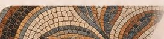
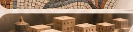
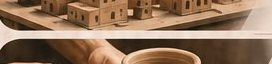
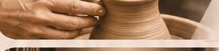
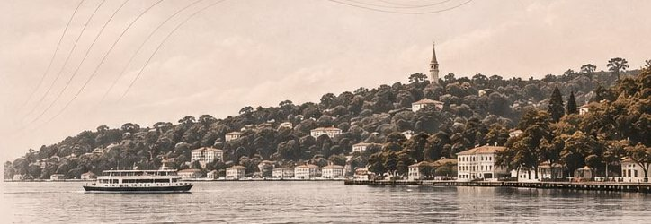

Mozaik Atölyesi
Antik desenlerden ilhamla mozaik üretimi.
İstanbul'un katmanlı zamanını mekân, insan ve su üzerinden okuyan; geçmişi, bugünü ve geleceği buluşturan deneyimsel bir müze.
Her ay farklı bir uygarlık ve dönem, İstanbul'un zaman topoğrafyasında yeniden hayat buluyor.
Kalıcı sergi alanındaki İstanbul maketini üç farklı hikâyeyle okuyun.
Yönetim, güç ilişkileri ve dönüşüm izleri.
İstanbullunun gündelik yaşamı, üretim, mahalle ve kültür.
Kentin suyla kurduğu ilişki; ulaşım, ticaret ve yaşam.
Güney kanattaki 80 m² atölyede ve jüri sınıfında, elle düşünmek için.

Antik desenlerden ilhamla mozaik üretimi.

Tarihi yapılardan mekân maketi tasarımı.

İlk yerleşimlerden ilhamla seramik form tasarımı.

Arkeoloji, mimarlık ve kültür mirası üzerine uzman buluşmaları.
Planla, keşfet, deneyimle.
